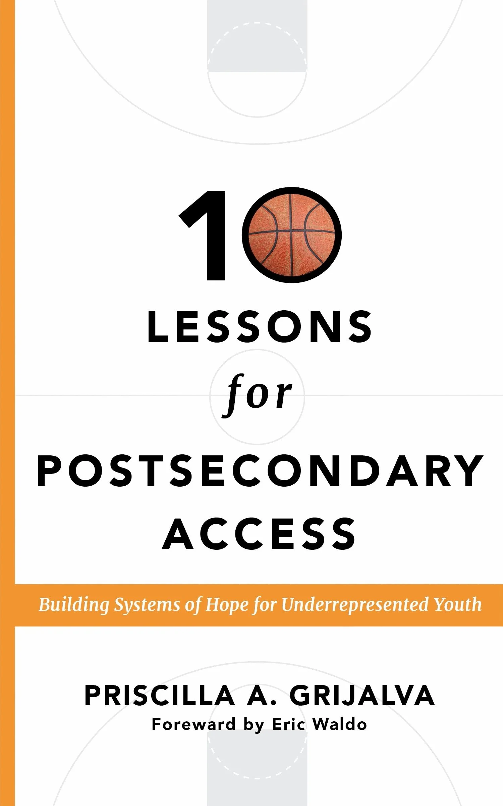

Book
#1 New Release Best Seller on Amazon for College Counseling, Financial Aid, and Career Development Counseling!

This practical guide provides both inspiration and actionable strategies for educators committed to equity and student success.
Inside this book, you will learn how to:
- Build schoolwide systems that expand postsecondary opportunities
- Use data to identify and close equity gaps
- Demystify financial aid and scholarship pathways
- Implement MTSS frameworks to support college and career readiness
- Create partnerships with colleges, military recruiters, and community organizations
- Celebrate student success in ways that foster belonging and hope
Through real-world stories, replicable strategies, and leadership insights, this book offers a clear roadmap for school counselors, counselor educators, and graduate students who are committed to ensuring every student—especially those historically underserved—has access to meaningful postsecondary pathways.
A Message of Hope
At its core, 10 Lessons for Postsecondary Access reminds educators that when hope is paired with intentional systems, students thrive—and entire communities can change.